PART VI. COMMON SENSE
This is a draft (July 28, 2005) of Chapter VI of The Emotion Machine by Marvin Minsky. All comments welcome. Send them to minsky@media.mit.edu.
PART VI. COMMON SENSE........................... 1
§6-1. What do we mean by Common Sense?........ 2
The Telephone Call............................................. 3
The concept of a ‘Panalogy.’.............................. 4
Sub-Realms of the Telephone World.................. 6
§6-2. Commonsense Knowledge and Reasoning. 8
How much does a typical person know?.......... 10
Could we build a Baby-Machine?.................... 11
Remembering................................................... 14
§6-3. Intentions and Goals.................................. 16
Difference-Engines........................................... 17
Goals and Subgoals.......................................... 20
§6-4. A World of Differences............................. 22
Rhythmic and Musical Differences.................. 25
Difference-Networks........................................ 26
§6-5. Making Decisions 27
§6-6. Reasoning by Analogy............................... 29
A Geometric Analogy Program............................ 29
§6-7. Knowledge needs Multiple Representations 32
"The way to make money is to buy stock at a low price, then when the price goes up, sell it. If the price doesn't go up, don't buy it." —Will Rogers.
Soon after the first computers appeared, their actions became the subjects of jokes. The tiniest errors in programming them could wipe out their clients’ bank accounts, credit them with outlandish amounts, or trap the computers in circular loops that kept repeating the same mistakes. This maddening lack of common sense led most observers to suspect that machines could never have genuine minds.
Today many programs do outstanding jobs more efficiently and reliably. Some of them can beat people at chess. Others can diagnose heart attacks. Yet others can recognize pictures of faces, assemble cars in factories, or even pilot planes or ships. But no machine yet can read a book, clean a house, or baby-sit.
Then why cannot our computers yet do so many things that people can do? Do they need more memory, speed, or complexity? Do they use the wrong kinds of instruction-sets? Do their limitations come from the fact that they only use zeros and ones? Or do machines lack some magical attribute that only a human brain can possess? This chapter will try to show, instead, that we don’t need to look for excuses like these, because most deficiencies of today’s machines stem from the limited ways we’ve been programming them.
One of these limitations is that we usually give a present-day program only the knowledge we think it will need to solve each particular problem. In contrast, every normal child learns millions of fragments of knowledge and skills that people regard as ‘obvious.’ For example, if you heard that someone tied a package with ‘string’ you might connect that word with ideas like these:
You can use a string to pull, but not push.
But you cannot push a thing
with a string.
Loose strings tend to get tangled up.
Fill your package before you tie it up.
A string will break when pulled too tight.
The first parts of this chapter will discuss the need for very large bodies of commonsense knowledge, as well as the kinds of skills we need for retrieving and applying such knowledge.
The middle parts of this chapter explore another cause for the weakness of present-day programs: they specify what the computer should do—without telling it which goals to achieve, or the intentions of those who programmed it. This means that they have no ways to reflect on whether those goals were achieved at all—or, if they were, at what cost and how well. Furthermore, those computers will still lack resourcefulness, even with access to great stores of knowledge because few fragments of knowledge are of use by themselves, unless they are also connected to reasons or goals for using them.
If you break something, you should replace it. (Because its owner wants it intact.)
People usually go indoors when it rains. (Because they do not like to get wet.)
It is hard to stay awake when you’re bored. (Why would one want to stay awake?)
People don’t like to be interrupted. (Because they want you to hear what they say.)
It is hard to hear in a noisy place. (You might want to hear what others say.)No one else can tell what you’re thinking. (Why might you value that privacy?)
Another deficiency is that a typical program will simply give up when it lacks some knowledge it needs—whereas a person can find other ways to proceed. So the final parts of this chapter discuss some of the tactics that people can use when we don’t already know just what to do— for example, by making useful analogies.
∞∞∞∞∞∞∞∞∞∞∞∞∞∞∞∞∞∞∞
§6-1. What do we mean by Common Sense?
“Common sense is the collection of prejudices acquired by age eighteen.”—Albert Einstein
Instead of blaming machines for their deficiencies, we should try to endow them with more of the knowledge that most people have. This should include not only what we call “commonsense knowledge”—the kinds of facts and theories that most of us know— but also the commonsense kinds of reasoning skills that we accumulate for applying that knowledge.
Student: Can you more precisely define what you mean by ‘commonsense knowledge’?
We each use terms like ‘common sense’ for the things that we expect other people to know and regard as obvious. So it has different meanings for each of us.
Sociologist: What people regard as obvious depends on their communities. Each person lives in several of these—such as family, neighborhood, language, clan, nation, religion, school, and profession—and each of these ‘clubs’ shares different collections of knowledge, beliefs and ways to think.
Child Psychologist: Still, even if you know only a child’s age, you can say much about what that child is likely to know. Researchers like Jean Piaget have studied children all over the world and found that their minds grow in similar ways.
Citizen: We sometimes say people lack 'common sense’ when they do things that seem foolish to us—not because they are lacking in knowledge, but that they’re not using it properly.
We are constantly learning, not only new facts, but also new kinds of ways to think. We learn some from our private experience, some from the teaching of parents and friends, and some from other people we meet. All this makes it hard to distinguish between what each person happens to know and what others regard as obvious. So, what each person knows (and their ways to apply it) may differ so much that we can’t always predict how others will think.
We tend to take commonsense thinking for granted, because we do not often recognize how intricate those processes are. Many things that everyone does are more complex than are many of those ‘expert’ skills that attract more attention and respect.
∞∞∞∞∞∞∞∞∞∞∞∞∞∞∞∞∞∞∞
The Telephone Call.
“You cannot think about thinking without thinking about thinking about something.”—Seymour Papert
We’ll start by following Papert’s advice—by thinking about some ways to think about this typical commonplace incident:
“Joan heard a ring, so she picked up her phone. Charles was answering a question she asked about a particular chemical process. He advised her to read a certain book, which he will shortly bring to her, since he will be in her neighborhood. Joan thanked him and ended the call. Soon Charles arrived and gave her the book.”
Each phrase of that story evokes in your mind some of these kinds of understandings:
Joan heard a ring. She recognizes that this special sound means that someone wishes to speak with her.
She picked up the phone. Compelled to respond, she crosses the room and moves the receiver to her ear.
Charles was answering a question she asked. Charles is in a different room. They both know how to use telephones.
He advised her to read a certain book. Joan understands what Charles has said.
Joan thanked him. Was that just a formality or was she genuinely grateful to him?
He’ll soon be in her neighborhood. Joan won’t be surprised when he arrives.
He gave her the book. We don’t know if this was a loan or a gift.
We draw these conclusions so fluently that we don’t even know that we’re doing it. So let’s try to examine how much is involved when one understands what happened when Joan heard that sound and picked up that phone.
First, when Joan looks at her telephone, she sees only a single side of it, yet she feels that she’s seen the entire thing, And even before she reaches for it, she anticipates how it will fit in her grasp, and how it will feel when it contacts her ear, and knows that one speaks into here and hears answers from there. She knows that if she dials a number, some other phone will ring somewhere else—and if anyone happens to answer it, then those two persons can start to converse.
All this rapid retrieval of knowledge seems a natural aspect of seeing an object—and yet, one has only detected some patches of light! How does such scanty evidence make it seem as though what you’re ‘looking at’ has been transported right into your mind—where you can move it and touch it and turn it around—or even open it up and look inside? The answer, of course, is that what you ‘see’ does not come from your vision alone, but also from how those visual clues lead you to retrieve other knowledge.
However, on the other side, you know so much about such things that, surely, your mind would be overwhelmed if you had to ‘attend’ to all that knowledge at once. So our next few sections will be discuss how brains might interconnect fragments of knowledge so that we can often retrieve just the ones that we need.
∞∞∞∞∞∞∞∞∞∞∞∞∞∞∞∞∞∞∞
The concept of a ‘Panalogy.’
“If you pluck an isolated sentence from a book, it will likely lose some or all of its meaning—i.e., if you show it out of context to someone else, they will likely miss some or all of its intended significance. Thus, much of the meaning of a represented piece of information derives from the context in which the information is encoded and decoded. This can be a tremendous advantage. To the extent that the two thinking beings are sharing a common rich context, they may utilize terse signals to communicate complex thoughts.”—Douglas Lenat
Every word, event, idea, or thing can have many different meanings to us. When you hear, "Charles gave Joan the book,’ that might make you think of that book as a physical object, or as a possession or possible gift. And you could interpret this ‘giving act’ in at least these three different realms of thought:
The Physical Realm: Here 'give’ refers to the book’s motion through space, as it moves from Charles’ hand to Joan’s.
The Social Realm: One might wonder about Charles’ motivation. Was he just being generous, or hoping to ingratiate himself?
The Dominion Realm: We may infer that Joan is not only holding that book, but also has gained permission to use it.
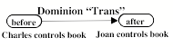
That “Dominion” realm” is important because we need it to achieve our goals. You cannot solve problems or carry out plans without adequate tools, supplies, and materials—but most of the things in our civilized world are controlled by persons or organizations that won’t allow you to use those things until you get permission to do so. So gaining control or authority is often a requirement for (or an obstacle to) achieving some other goal.
Similarly, when two children are playing together with blocks, each may have concerns in many different mental realms:
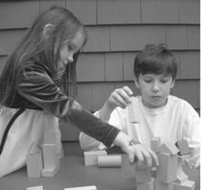
Physical: What if I pulled out that bottom block?
Social: Should I help him with his tower or knock it down?
Emotional: How would he react to that?
Mental: I forgot where I left the arch-shaped block.
Bodily: Can I reach that arch-shaped block from here?
Visual: Is the long flat block hidden behind that stack?
Tactile: What would it feel like to grab three blocks at once?[1]
Spatial: Could I arrange them into the shape of a table?
What happens when you select an inappropriate realm of thought, in which to interpret a certain event? Then almost instantly after you notice this, you switch to a relevant point of view, without any sense of starting over again. How do we do this so rapidly? In §8-3 I will argue that our brains may use special machinery that links corresponding aspects of each view to the same ‘role’ or ‘slot’ in a larger-scale structure that is shared across several different realms. We’ll call such a structure a “Panalogy” (for Parallel Analogy) and will discuss this more in §8-3. [2]
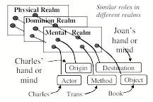
Three meanings of ‘give.’
We again see how a thing or idea can be viewed as having multiple meanings. We sometimes call these ‘ambiguities’ and regard them as defects in how we express or communicate. However, when these are linked into panalogies, then when situations don’t seem to make sense, we can think about them in alternative realms—without the need to start over again. Shortly, we’ll outline a similar scheme to explain how our vision could work so speedily.
Student: You’re suggesting that we use the same techniques to represent transportation in space, for transferring an ownership, and for transmitting knowledge to other brains. But what could have led our minds to treat such different ideas in such similar ways?
It surely is no accident that our language uses the same prefix ‘trans’ in transfer, transport, transmit, translate, transpose, etc., —because that common word-part ‘trans’ induces us to make many widely useful analogies.[3] Each of us knows thousands of words, and as each time we learn how others use one of them, we inherit another panalogy.
Student: How many different realms can a person use for any particular concept or object? How many of them can we handle at once? How does one know when it’s time to switch? To what extent do different persons partition their worlds into similar realms?
More research on semantics will eventually clarify questions like these, but the following sections will only discuss a handful of realms that are familiar to everyone.
∞∞∞∞∞∞∞∞∞∞∞∞∞∞∞∞∞∞∞
Sub-Realms of the Telephone World
We’ve mentioned only a few of the things that every telephone user knows. However, to use what you know about telephones, you also have to know how to speak, and to understand some of what you may hear. You also need a good deal of knowledge about what people are and how they think, so that you can turn their interests toward the subjects that you want to discuss. Consider how many different knowledge-realms we engage to understand the story about Joan’s telephone call.
The Spatial Realm: Joan is close to her telephone, but Charles must be in some more distant place.
The Dominion Realm: Both Joan and Charles have telephones, and Charles has dominion over that book. But we can’t be quite certain of which ones they own.
The Procedural Realm: How does one make a telephone call? We could represent this in terms of a script in which certain actions are specified, but others require you to improvise.
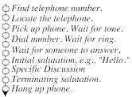
First, you must find the phone and dial a number. Then, once the connection has been established, you're supposed to begin with some pleasantries. Eventually, you should say why you called—and then depart from the typical script. At the end you'll close the conversation by saying “goodbye” and ‘hanging up’. Generally, such behavioral scripts begin and end with conventional steps, with improvisations in between. However, you’ll have to depart from the script if something goes wrong—and know how to deal with a wrong connection, or what to do if there is no answer, or if you hear the whine of a modem—or if there is too much noise on the line.
The Social Realm: When that telephone rings from across the room, Joan will have to walk over to get it; she knows it will do no good to ask, “Telephone, would you please come here!” To make an inanimate object move, you have to push, pull, or carry it. But if you want a person to move, those actions would be considered rude; instead you’re expected to make a request. It takes our children quite a few years to learn enough such social rules.
The Economic Realm: Every action incurs some cost—not only in materials, time, and energy, but also by closing off alternatives that might bring different benefits. This raises questions about how much effort and time one should spend at comparing the costs of those options. I suspect that there’s no simple answer to that, because it depends so much on the present state of the rest of one’s mind. [See §§Free Will.]
The Conversational Language Realm: Most people are experts at dialog, but consider how complex are the skills involved in a typical verbal exchange. You must constantly keep track of the topic, your goal, and your social role. To maintain the respect of your listeners, you must guess what they already know and remember what has already been said—so that you won’t be too repetitive. It is annoying to be told things one already knows, like “People can’t see the backs of their heads,” so your conversation must partly be based on your models of what your listeners know about the subjects that are being discussed.
You can communicate your apprehensions and hopes—or try to disguise your intentions; you know that every expressive selection can strengthen or weaken social bonds; each phrase can persuade or intimidate, conciliate or irritate, or ingratiate or drive away. You also need to keep searching for clues about how well they have understood about what you’ve said—and why you were trying to tell them those things.
Humanist: Speaking over a telephone is a poor substitute for a face-to-face exchange. The telephone lacks the 'personal touch' through which your gestures can put the others at ease, or express the strength of your feelings.
One always loses some nuances when conversing with a person at some other location.’ On the other side, we're not always aware of the misconceptions that result from what we call 'face-to-face' interactions. What if the stranger that you have just met should resemble (in manner or facial appearance) some trusted friend or some enemy? If that person reminds you of some old Imprimer, this can arouse a misplaced affection or unjustified sense of intimidation. You may think you can later correct such mistakes—but one can never completely erase the ‘first impression’ that one makes.
We also all share many abilities that we don’t usually call ‘commonsensical”—such as the kinds of physical skills that Joan uses to answer that telephone call:
The Sensory and Motor Realms: It takes less than a single second for you to reach out your arm and “Pick up the phone" —yet consider how many sub-goals this involves:
Determine the telephone’s location.
Determine its shape and orientation.
Plan to move your hand to its place.
Plan how your hand will grasp its shape.
Plan to transport it toward your face.
Each step of that script raises questions about how we do those things so quickly. We can program computers to do such things, but we do not know how we do them ourselves. It is often supposed that such actions are done under continuous ‘feedback control’—by processes that keep working to reduce your distance from your goal. However, that cannot be generally true because human reactions are so slow that it takes about one-fifth of a second to react to events that one did not expect. This means that you cannot change what you are doing right now; all you can do is revise the plan that you’ve made for what you will do after that. Thus when Joan reaches out to answer that call, she must plan to reduce the speed of her hand—and to already have reshaped her hand—before it collides with that telephone. Without good plans for what will happen next, she’d be constantly having accidents.
Kinesthetic, Tactile, and Haptic Realms: When you squeeze your phone between shoulder and cheek, you anticipate its texture and weight, adjust your grip so that it won’t slip, and expect those pressures to disappear as soon as you release it. You already know that this object will fall if released from your grasp, or will break when subjected to too large a stress An immense amount of such knowledge is stored in your spinal cord, cerebellum, and brain—but those systems are so inaccessible that we can scarcely begin to think about them.
Cognitive Realms: We are almost equally inept at describing the systems we use when we think. For example, we are almost completely unaware of how we retrieve and combine the various fragments of knowledge we need—or of how we deal with the risks of being wrong when these involve uncertainties.
The Self-Knowledge Realm: Whatever you may be trying to do, you’ll need models of your own abilities. Otherwise, you’ll set goals that you’ll never achieve, make elaborate plans that you won’t carry out, or too frequently switch between interests—because, as we’ll see in §9 Self, it is hard to achieve any difficult goals unless one can make oneself persist at them.
It would be easy to add to this list of realms, but hard to construct clear distinctions between them.
∞∞∞∞∞∞∞∞∞∞∞∞∞∞∞∞∞∞∞
§6-2. Commonsense Knowledge and Reasoning.
Robertson Davies: You like the mind to be a neat machine equipped to work efficiently, if narrowly, and with no extra bits or useless parts. I like the mind to be a dustbin of scraps of brilliant fabric, odd gems, worthless but fascinating curiosities, tinsel, quaint bits of carving, and a reasonable amount of healthy dirt. Shake the machine and it goes out of order; shake the dustbin and it adjusts itself beautifully to its new position. [4]
Albert Einstein: A little knowledge is a dangerous thing. So is a lot.
I once encountered a fellow professor who was returning from teaching a class, and I asked him how the lecture went. The reply was that it had not gone well because “I couldn’t remember which concepts were hard.” This suggests that, over time, such experts convert some of their high-level skills into lower-level script-like processes that leave so few traces in memory that those expects cannot explain how they actually do those things. This has led many thinkers to classify knowledge into two kinds:
Knowing What. These are the kinds of ‘declarative’ or ‘explicit’ knowledge that we can express in gestures or words.
Knowing How. These are the kinds of ‘procedural’ or ‘tacit’ skills (like walking or imagining) that we find very hard to describe.
However, this popular distinction doesn’t describe the functions of those types of knowledge. Instead, for example, we might classify it in terms of the kinds of thinking that we might apply to it:
Positive Expertise: Knowing the situations in which to apply a particular fragment of knowledge.
Negative Expertise. Knowing which actions not to take, because they might make a situation worse.[5]
Debugging Skills. Knowing other ways to proceed when our usual methods fail.
Adaptive Skills. Knowing how to adapt old knowledge to new situations.
The first large-scale attempt to catalog commonsense knowledge was the “CYC” project of Douglas Lenat, which started in 1984, and is described at www.cyc.com. Many ideas in this section were inspired by the results of that project.
Douglas Lenat: “In modern America, this encompasses recent history and current affairs, everyday physics, ‘household’ chemistry, famous books and movies and songs and ads, famous people, nutrition, addition, weather, etc. … [It also includes] many "rules of thumb" largely derived from shared experiences—such as dating, driving, dining, daydreaming, etc., —and human cognitive economics (misremembering, misunderstanding, etc.,), and shared modes of reasoning both high (induction, intuition, inspiration, incubation) and low (deductive reasoning, dialectic argument, superficial analogy, pigeon-holing, etc.).”
Here Lenat describes some kinds of knowledge that a simple statement like this might engage: [6]
“Fred told the waiter he wanted some chips.”
The
word “he” means Fred—and not the waiter. This event took place in a
restaurant. Fred was a customer dining there. Fred and the waiter were a few
feet apart. The waiter was at work there, waiting on Fred at that time.
Fred wants potato chips, not wood chips—but he does not want some particular
set of chips.
Both Fred and the waiter are live human beings. Fred accomplished this by
speaking words to the waiter. Both of them speak the same language. Both were
old enough to talk, and the waiter was old enough to work.
Fred is hungry. He wants and expects that in a few minutes the waiter will
bring him a typical portion—which Fred will start eating soon after he gets
them.
We can also assume that Fred assumes that the waiter also assumes all those
things.
Here is another example of how much one must know to give meaning to a commonplace statement:
“Joe’s daughter was sick so he called the doctor.”
We can assume
that Joe cares about his daughter, is upset because she is sick, and wants her
to be healthy. Presumably he believes she is sick because of observing some
symptoms.
People have different abilities. Joe himself cannot help his daughter. People
ask others for help to do things they can’t do themselves. So Joe called the
doctor to help heal his daughter.
Joe’s daughter, in some sense, belongs to Joe. People care more about their
own daughters than about other people’s daughters. If so advised, Joe will
take the daughter to the doctor. When at the doctor’s, she will still belong
to Joe.
Medical services can be expensive, but Joe is likely to forgo other spending to
get the doctor to help the daughter.
These are all things that ‘everyone knows’ and uses to understand everyday stories. But along with that widely shared, common knowledge, every person also has personal knowledge; we each know our own private histories, characteristics of our acquaintances, special perceptual and motor skills, and other kinds of expertise.
Still, none of our knowledge would have any use unless we also had effective ways to apply that knowledge to solving problems. This means that we also need large bodies of skills for doing what we call commonsense thinking. We’ll come back to that in chapter §7.
∞∞∞∞∞∞∞∞∞∞∞∞∞∞∞∞∞∞∞
How much does a typical person know?
Everyone knows a good deal about many objects, topics, words, and ideas—and one might suppose that a typical person knows an enormous amount. However, the following argument seems to suggest that the total extent of a person’s commonsense knowledge might not be so vast. Of course, it is hard to measure this, but we can start by observing that every person knows thousands of words, and that each of those must be linked in our minds to as many as a thousand other such items. Also a typical person knows hundreds of uses and properties of thousands of different common objects. Similarly, in the social realm, one may know thousands of things about tens of people, hundreds of things about hundreds of people, and tens of useful items about as many as a thousand people.
This suggests that in each important realm, one might know perhaps a million things. But while it is easy to think of a dozen such realms, it is hard to think of a hundred of them. This suggests that a machine that does humanlike reasoning might only need a few dozen millions of items of knowledge. [7]
Citizen: Perhaps so, but I have heard of phenomenal feats of memory. What about persons with photographic memories, who can recollect all the words of a book after only a single reading of it? Could it be that we all remember, to some extent, everything that happens to us?
We all have heard such anecdotes, but whenever we try to investigate one, we usually fail to uncover the source, or find that someone was fooled by a magic show trick. Many a person has memorized an entire book of substantial size (which most usually is a religious tract)—but no one has ever been shown to have memorized a hundred such books. Here is what one psychologist said about a person who appeared to him to possess a prodigious memory:
Alexander R.Luria: "For almost thirty years the author had an opportunity systematically to observe a man whose remarkable memory... which for all practical purposes was inexhaustible" (p3) … It was of no consequence to him whether the series I gave him contained meaningful words or nonsense syllables, numbers or sounds; whether they were presented orally or in writing. All that he required was that there be a three-to-four-second pause between each element in the series. . … And he could manage, also, to repeat the performance fifteen years later, from memory." [8]
This may seem remarkable, but it might not be truly exceptional, because, in 1986, Thomas Landauer concluded that, during any extended interval, none of his subjects could learn at a rate of more than about 2 bits per second, whether the realm be visual, verbal, musical, or whatever. So, if Luria’s subject required four seconds per word, he was well within Landauer’s estimate.[9] And even if that individual were to continue this over the course of a typical lifetime, this rate of memorization would produce no more than 4000 million bits—a database that would easily fit on the surface of a Compact Disk.
Student: I’m uncomfortable with this argument. I agree that it might apply to our higher-level kinds of knowledge. But our sensory and motor skills might be based on much larger amounts of information.
We don’t have a good way to measure such things, and making such estimates raises hard questions about how those fragments of knowledge are stored and connected. Still, we have no solid evidence that any person has ever surpassed the limits that Landauer’s research suggests. [10]
Chapter §7 will speculate about how we organize knowledge so that, whenever one of our processes fails, we can usually find an alternative. But here we’ll change the subject to ask how we could endow a machine with the kinds of knowledge that people have.
∞∞∞∞∞∞∞∞∞∞∞∞∞∞∞∞∞∞∞
Could we build a Baby-Machine?
Alan Turing: “We cannot expect to find a good child machine at the first attempt. One must experiment with teaching one such machine and see how well it learns. One can then try another and see if it is better or worse [but] survival of the fittest is a slow method for measuring advantages. The experimenter, by the exercise of intelligence, should be able to speed it up [because] if he can trace a cause for some weakness he can probably think of the kind of mutation which will improve it.” [11]
To equip a machine with something like the knowledge we find in a typical person, we would want it to know about books and strings; about floors, ceilings, windows, and walls; about eating, sleeping, and going to work. And it wouldn’t be very useful to us unless it knew about typical human ideals and goals.
Programmer: Then, why not build a ‘baby-machine’ that learns what it needs from experience? Equip a robot with sensors and motors, and program it so that it can learn by interacting with the real world—the way that a human infant does. It could start with simple If-Then schemes, and then later invent more elaborate ones.
This is an old and popular dream: to build a machine that starts by learning in simple ways and then later develops more powerful methods—until it becomes intelligent. In fact several actual projects have had this goal, and each such system made progress at first but eventually stopped extending itself.[12] I suspect that this usually happened because those programs failed to develop good new ways to represent knowledge.
Inventing good new ways to represent knowledge is a major goal in Computer science. However, even when these are discovered, they rarely are quickly and widely adopted—because one must also develop good skills to work with them efficiently. And since such skills take time to grow, you will have to make yourself tolerate periods in which your performance becomes not better, but worse. [13]
The Investment Principle: It is hard to appreciate the virtues of a new technique because, until you become proficient with it, it will not produce results as good as you’ll get from the methods that you are familiar with.
No one has yet made a baby-machine that that developed effective new kinds of representations. Chapter §10 will argue that human brains are born equipped with machinery that eventually provides them with several different ways to represent various types of knowledge.
Here is another problem with “baby-machines.” It is easy to program computers to learn fairly simple new If Then rules; however, if a system does this too recklessly, it is likely to deteriorate from accumulating too much irrelevant information. Chapter §8 will argue that unless learning is done selectively—by making appropriate “Credit Assignments,” a machine will fail to learn the right things from most of its experiences.
Entrepreneur: Instead of trying to build a system that learns by itself, why not make one that searches the Web to extract knowledge from those millions of pages of content-rich text.
That certainly is a tempting idea, for the World Wide Web must contain more knowledge than any one person could comprehend. However, it does not explicitly include the knowledge that one would have to use to understand what all those texts mean. Consider the kind of story we find in a typical young child’s reading book.:
The World Wide Web contains more knowledge than any one person could ever learn. However, it does not explicitly display the knowledge one needs for understanding what all those texts mean. Consider the kind of story we find in a typical young child’s reading book.:
“Mary was invited to Jack’s party. She wondered if he would like a kite. She went shook her piggy bank. It made no sound.” [14]
A typical reader would assume that Jack is having a birthday party, that Mary is concerned because she needs to bring Jack a suitable present, that a good birthday present should be something that its recipient likes; that Jack might like to receive a kite; that Mary wants money to pay for that kite; and that the bank would have rattled if it contained coins. But because these are all things that ‘everyone knows’ we scarcely ever write them down, so such knowledge stays hidden ‘between the lines.’[15]
Neurologist: Why not try to copy the brain, using what brain-scientists have learned about the functions of various parts of the brain.
We learn more about more such details every week—but still do not yet know enough to simulate a spider or snake.
Programmer: What about alternatives such as building very large Neural Networks or big machines that accumulate huge libraries of statistical data?
Such systems can learn to do useful things, but I would expect them to never develop much cleverness, because they use numerical ways to represent all the knowledge they get. So, until we equip them with higher reflective levels, they won’t be able to represent the concepts they’d need for understanding what those numbers might mean.
Evolutionist: If we don’t know how to design better baby-machines, perhaps we can make them evolve by themselves. We could first write a program that writes other programs and then makes various kinds of mutations of them—and then making those programs compete for survival in suitably lifelike environments.
It took hundreds of million of years for us to evolve from the earliest vertebrate fish. Eventually a few of their descendants developed some higher-level systems like those we described in chapter §5; in fact most vertebrates never developed them. Generally, it is hard for complex systems to improve themselves because most specializations that lead to near-term gains are likely to make it much harder to change. We’ll discuss this more in §§Duplication and Diversity.
In contrast, human brains start out equipped with systems that are destined to develop into useful ways to represent knowledge. We’ll need to know more about such things before we are ready to construct efficient self -improving machines.
Architect: In this section you’ve been very negative. You’ve said that each of those methods has merit, and yet you found reasons to reject them all. But surely one could combine the virtues of all those ideas, in some way in which each offsets the others deficiencies.
Indeed, we should find ways to use them all, and we’ll propose ways to do this in subsequent chapters. I would not dismiss all prospects of building a baby-machine, but only schemes for doing this by “starting from scratch’—because it seems clear that a human baby begins equipped with intricate ways to learn, not only to master the simplest facts, but to also construct new ways to think. If you don’t agree with this, try teaching your kitten to read and write, do calculus, or dress itself.
More generally, it seems to me that all of the previous learning schemes—statistical, genetic, and logical—have ‘tapered off’ by getting stuck because of not being equipped with ways to overcome problems like these:
The Optimization Paradox: The better a system already works, the more likely each change will make it worse. See §§Duplication.
The Investment Principle: The better a certain process works, the more we will tend to rely on it, and the less likely we will be inclined to develop new alternatives.
The Parallel Processing Paradox: The more that the parts of a system interact, the more likely each change will have serious side effects.
In other words, as a system gets better it may find that it is increasingly harder to find more ways to improve itself. Evolution is often described as selecting good changes—but it actually does far more work at rejecting changes with bad effects. This is one reason why so many species evolve to occupy narrow, specialized niches that are bounded by all sorts of hazards and traps. Humans have come to escape from this by evolving features that most animals lack—such as ways to tell their descendants about the experiences of their ancestors. See §§Evolution.
In any case, for a machine to keep developing, it must have ways to protect itself against changes with too many side effects. One notable way to accomplish this is to split the whole system into parts that can evolve separately. This could be why most living things evolved as assemblies of separate ‘organs’—that is, of parts with fewer external connections. Then changes inside each of those organs will have fewer bad external effects. In particular this could be why the resources inside our brains tended to become organ-ized into more-or-less separate centers and levels—like those suggested in §5-6.
Reactive
systems operate on descriptions of
real, external situations.
Deliberation operates
on descriptions of future reactions.
Reflective systems
operate on descriptions of deliberations.
Self-Reflection
operates on descriptions of reflections.
Why emphasize descriptions here? That’s because we could never learn enough low-level If-Then rules, and the only alternative is to use abstractions—as was argued in 1959 in an essay called Programs with Common Sense.[16]
John McCarthy: “If one wants a machine to discover an abstraction, it seems most likely that the machine must be able to represent this abstraction in some relatively simple way.”
We need to make our descriptions abstract because no two situations are ever the same, so as we saw in §5-2, our descriptions must not be too concrete—or they would not apply to new situations. However, as we noted in §5-3, no representation should be too abstract, or it will suppress too many details. [17]
∞∞∞∞∞∞∞∞∞∞∞∞∞∞∞∞∞∞∞
Remembering
We discussed how much knowledge a person could have, but perhaps it is more important to ask how we re-collect what we need so quickly when we need it?
Whenever we get a new idea, or find a new way to solve a problem, we may want to make a memory-record of it. But records are useless unless you have ways to retrieve the ones most likely to be relevant to the problems you face. I’ll argue that this needs a lot of machinery.
Citizen: If remembering is so complex, then why does it seem so effortless, simple and natural? Each idea reminds me of similar ones, which then make me think of related ideas—until I recall the ones that I need.
Why does ‘remembering’ seem so effortless? As long ago as you can remember, you could always recall things that happened to you. However, you cannot remember much of your earliest years; in particular, you cannot recall how you developed your early abilities. Presumably, you had not yet developed the skills one needs for making those kinds of memories.[18]
Because of this Amnesia of Infancy, we all grow up with simplistic views of what memories are and how they work. You might think of your memory as like a writing-pad, on which you can jot down mental notes. Or perhaps for each significant event, you store ‘it’ away in some kind of memory-box and later, when you want it back, you somehow bring ‘it’ out of that box—if you are lucky enough to find it. But, what kinds of structures do we use to represent those ‘its’ and how do we bring them back when we need them? Our recollections would be useless unless (1) they are relevant to our goals and (2) we also have ways to retrieve the ones that we need at the times when we need them.
To do this, a computer expert might suggest that we store everything in some single ‘data base’ and use some general-purpose ‘matching’ technique. However, most such systems still classify things in terms of how they are described instead of what they are likely to be useful for. The trouble with this is we do not usually know what kind of thing we are looking for, but only what we want to accomplish with it—because we’re facing some obstacle, and want to know how to deal with it.
So, instead of using some ‘general method, I suspect that every child develops ways to link each new fragment of knowledge to goals that it might help us to achieve, as well as to other related ideas. These additional links might help to answer questions like these:
What kinds of goals might
this item serve? Which kinds of
problems could it help to solve? What obstacles could it help to overcome?
In which situations might it be relevant? In which contexts is this likely to help? What
subgoals must first be achieved?
How has it been applied in the past? What were some similar previous cases?
What other records might be
relevant? See §8-Credit Assignment.
Each fragment of knowledge may also need links to some knowledge about its deficiencies—and the dangers and costs of using it:
What are its most
likely side effects? Is
it likely to do us more harm or more good?
How much will it cost to use it? Will it repay the effort of using it?
What are its common exceptions and bugs? In which contexts is it likely to fail us—and what might be good
alternatives?
Is it part of some relevant family? [See Glossary: Ontology.]
We also link each item to information about its sources and to what other persons might know.
Was it learned from a
reliable source? Some informants
may simply be wrong, while others may mean to mislead us.
Is it likely to be outdated soon?
That’s why this book does not depend much on current beliefs about how our
brains work.
Which other people are likely to know it? Our social activities strongly depend on
knowing what others may understand.
All this raises question about how we make so many connections to and from each new fragment of knowledge. I suspect that we can’t do this all at once—and indeed there is some evidence that it normally takes some hours or days (including some sessions of dream-laden sleep) to establish new long-term memories. Also, we probably add more links each time we retrieve a fragment of knowledge, because then we’re likely to ask ourselves, “How did this item help (or hinder) me at overcoming this obstacle?” Indeed, some research in recent years suggests that our so-called long-term memories are not so permanent as we used to think; it seems that they can be altered by suggestions and other experiences.
We all know that our memory systems can fail. There are things that we can’t remember at all. And sometimes we tend to recollect, not what actually happened to us, but versions that seem more plausible. At other times we fail to remember something relevant until—after several minutes or days—suddenly the answer appears—and you say to yourself, “How stupid of me; I knew that all along!” (That could happen either because an existing record took long to retrieve, or because it was never actually there, and you had to construct a new idea by using some process of reasoning.)
In any case, we should expect such ‘lapses’ because our recollections must be selective; §4-4 discussed how bad it would be to remember everything all the time: it would overwhelm us to recall all the millions of things that we know. However, none of this answers the question of how we usually retrieve the knowledge that we currently need. I suspect that this is mainly due to our already having prepared in advance the sort of links discussed above. But constructing these requires additional skills; we’ll discuss these in §8-5 Credit Assignment.
As the start of this section we asked about how we retrieve the knowledge we need. The following section will argue that part of the answer lies in those links to the goals that each fragment of knowledge might help to achieve.” To make that statement more concrete, the next few sections will investigate what goals are and how they work.
∞∞∞∞∞∞∞∞∞∞∞∞∞∞∞∞∞∞∞
§6-3. Intentions and Goals
"No one imagines that a symphony is supposed to improve in quality as it goes along, or that the whole object of playing it is to reach the finale. The point of music is discovered in every moment of playing and listening to it. It is the same, I feel, with the greater part of our lives, and if we are unduly absorbed in improving them we may forget altogether to live them." —Alan Watts.
Sometimes we seem to act passively, just reacting to things that happen to us—but at other times we feel more in control, and feel that we’re actively choosing our goals. I suspect that this most often happens when two or more goals become active at once and thereby lead to a conflict. For as we noted in §4-1, when our routine thinking runs into trouble, this engages our higher reflective levels.
For example, when angry or greedy enough, we are likely to take actions that later may make us have feelings of shame or guilt. Then we may offer such justifications as, “that impulse became too strong to resist” or “I found that I did it in spite of myself.” Such excuses relate to the conflicts between our immediate goals and our higher ideals, and every society tries to teach its members to resist their urges to breach its conventions. We call this developing ‘self-control’ and each culture makes maxims about such feelings.
Moralist: No
merit comes from actions based on self-serving wishes.
Psychiatrist: One must learn to control one’s unconscious desires.
Jurist: To be guilty in the first-degree, an offense must be deliberate.
Still, an offender can object, “I didn’t intend to do those things,” —as though a person is not ‘responsible’ for an action that wasn’t intentional. But, what kinds of behavior might lead you to think that a person did something “deliberately”—in contrast to it having resulted from mental processes that were not under that person’s control?
To understand this, it may help to observe that we have similar thoughts about physical things; when we find that some object is hard to control, we sometimes imagine that it has a goal—and say, “This puzzle-piece doesn’t want to fit in,” or “My car seems determined not to start.” Why would we think of an object in that way, when we know that it has no such intentions?
The same thing can happen inside your mind, when one of your goals becomes so strong that it is hard to think about anything else. Then it may seem to come from no choice of your own, but is somehow being imposed upon you.But, what could make you pursue a goal that does not seem to be one that you want? This could happen when that particular goal conflicts with some of your high-level values, or when you have other goals with different aims; in any case, there is no reason to expect all of one’s goals to be consistent.
However, this still does not answer the question of why a goal can seem like a physical force, as in, “That urge became irresistible.” And indeed, a ‘powerful’ goal can seem to push other goals aside, and even when you try to oppose it, it may prevail if you don’t fight back strongly enough. Thus both forces and goals share some features like these:
Both seem to aim in a certain
direction.
Both ‘push back’ when we try to deflect them.
Each seems to have a ‘strength,’
or ‘intensity.
Both tend to persist till the cause of them ends.
For example, suppose that some external force is applied to your arm—say, strongly enough to cause some pain—and your A-Brain reacts by pushing back (or by moving away)—but, whatever you do, it keeps pressing on you. In such a case, your B-brain might see nothing more than a sequence of separate events. However, your higher reflective levels might recognize these as matching this particular pattern:
“Something is resisting my efforts to make it stop. I recognize this as a process which shows some persistence, aim, and resourcefulness.”
Furthermore, you might recognize a similar pattern inside your mind when some resources make choices in ways that the rest of your mind cannot control, as when you do something “in spite of yourself.” Again, that pattern may seem as though some external force was imposed on you. So it often makes practical sense to represent both forces and intentions as though they were assistants or antagonists.
Student: But isn’t it merely a metaphor, to speak of a goal as resembling a force? Surely it’s bad to use the same words for things with such different characteristics.
We should never say ‘merely’ for metaphors, because that is what all descriptions are; we can rarely state just what something is, but can only describe what something is like—that is, to describe it in terms of other things we already know to have some similar properties—and then to consider the differences. Then, we label it with the same or a similar name—so that thenceforth that older word or phrase will include this additional meaning-sense. This is why most of our words are ‘suitcase-words’—and later I will argue that the ambiguities of our words may be the greatest treasures that we inherit from our ancestors.
We’ve mentioned goals many times in this book—but never discussed how goals might work. So let us turn from the subject of how a goal feels to ask what a goal might actually be!
∞∞∞∞∞∞∞∞∞∞∞∞∞∞∞∞∞∞∞
Difference-Engines
Aristotle: “Differences arise when what we get is different from what we desire; for it is like getting nothing at all when we do not get what we aim at.”
Sometimes people appear to behave as though they had no direction or aim. At other times they seem to have goals. But what is a goal, and how can we have one? If you try to answer such questions in everyday words like, “a goal is thing that one wants to achieve,” you will find yourself going in circles because, then, you must ask what wanting is—and then you find that you’re trying to describe this in terms of other words like motive, desire, purpose, aim, hope, aspire, yearn and crave.
More generally, you get caught in this trap whenever you try to describe a state of mind in terms of other psychology-words, because these never lead to talking about the underlying machinery. However, we can break out of that with a statement like this:
A person will seem to have a goal when they keep different techniques that are likely to change their present situation into a certain other condition.
This takes us out of the psychological realm by leading us to ask about what kind of machinery could do such things. Here is one way such a process might work:
Aim: It begins with a description of a certain possible future
situation. It also can recognize some differences between the situation it now
is in and that “certain other condition.”
Resourcefulness: It is also equipped with some methods that may be able to reduce those particular kinds of differences.
Persistence: A process that keeps applying those methods. Then, in
psychological terms, we will perceive it as
trying to trying to change what it now has into what it ‘wants.’
Persistence, aim, and resourcefulness! The next few sections will argue that this particular triplet of properties could explain the functions of what we call motives and goals, by giving us answers to questions like these:
What makes some goals strong
and others weak?
What are the feelings that accompany them?
What could make an impulse "too strong to resist?
What makes certain goals ‘active’ now?
What determines how long they’ll persist?
No machine had clearly displayed those three traits of Aim, Persistence, and Resourcefulness—until 1957, when Allen Newell, Clifford Shaw and Herbert Simon developed a computer program called the “General Problem Solver.” Here is a simplified version of how it worked; we’ll call this version a Difference-Engine.[19]
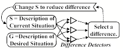
At every step, this program compares its descriptions of the present and that future situation, and this produces a list of differences between them. Then it focuses on the most serious difference and applies some technique that has been designed to reduce this particular type of difference. If this succeeds, the program then tries to reduce what now seems to be the most serious difference. However, whenever such a step makes things worse, the system goes back and tries a different technique.
For example, every infant is born with such a system for maintaining ‘normal’ body temperature: when too hot, the baby may sweat, pant, stretch out, and/or vasodilate; when too cold, it will curl up, shiver, vasoconstrict and/or raise its metabolic rate.
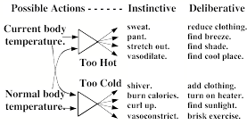
At first we may be unaware of such processes, because such instinctive reactions begin at very low cognitive levels. For example, when you become too hot, you automatically start to sweat. However, when perspiration drips, you may notice this, and deliberate: “I must find some way to escape from this heat.” Then your acquired knowledge may suggest other actions to take, such as moving to an air-conditioned place. If you feel too cold, you might put on a sweater, turn on a stove, or begin to exercise (which can make you produce ten times as much heat).
Now we can interpret "having a goal” to mean that a Difference-Engine is actively working to remove those differences.
Student: To have a goal, does one really need a representation of the desired situation? Would it not be sufficient just to have a list of desired properties?
This is a matter of degree, because one could never specify every aspect of a situation. We could represent a ‘desired situation’ as a simple, rough sketch of a future scene, as a list of a few of its properties, or as just some single property (for example, that it is causing some pain).
Student. It seems to me that we should distinguish between ‘having a goal’ and actively ‘wanting’ it. I would say that your difference-engine is a “wanting machine’ and that the goal itself is only the part that you called its ‘aim’—its current description of some future situation.’
An imagined description becomes an active goal when one is running a process that keeps changes conditions until they fit that description. Our everyday language does not serve well for making the kinds of distinctions we need and, to remedy that, each technical field must develop its own specialized language or ‘jargon.’ However, it will be hard to do this for psychology until we can agree on which more detailed models of minds to use.
Romanticist: This Difference-Engine idea could account for some of what "having a goal" might mean—but it doesn’t explain the joy of success, or the distress that besets us when we fail to achieve what we’ve hoped for.
I agree that no single meaning of goal can explain all of those cascades of feelings, because wanting is such a large suitcase of concepts that no single idea can embrace them all. Besides, many things that people do come from processes with no goals at all, or goals of which they are unaware. Nevertheless, the Difference-Engine’s characteristics capture more of our everyday concept of ‘goal’ than any other description I’ve seen.
Student. What happens when that difference-engine finds several differences at once? Can it work on them all simultaneously, or must it deal with them one-by-one?
When several differences are evident, one might try to reduce several at once, perhaps by using different parts of the brain. However, Newell and Simon concluded that it is usually best to first try to remove the one that seems most significant, because this is likely to change quite a few of the others. So the General Problem Solver included a way to assign a different priority to each kind of difference that it could detect.
Student: Isn’t that a flaw in that? What if Carol places a block in a place that prevents her from building the rest of her arch? Sometimes reducing one difference might make all the other differences worse.
That turned out to be a severe limitation, because a Difference-Engine, by itself, has no way to plan several steps ahead—for example, by the methods suggested in §5-5—so it cannot sustain a short-term loss for the purpose of later, larger gains. So, although their system could solve many problems, this limitation seems to have led Newell and Simon to move in other directions.[20] In my opinion, they should have persisted, because this project had so many good ideas that I find it strange that it was not further developed in later years. In any case, we can’t expect any one method to solve every problem—and our forthcoming project will try to embody the concepts that Newell and Simon abandoned.
In retrospect, one could argue that the system got stuck because it was not equipped with ways to reflect on its own performance—the way that people can ‘stop to think’ about the methods that they have been using. However, in a great but rarely recognized essay, Newell and Simon did indeed suggest a very ingenious way to make such a system reflect on itself.[21]
On the positive side, the General Problem Solver was equipped with several ways to reduce each kind of difference, and it even included a place for ways to introduce new kinds of representations.
What if one fails to solve a problem, even after using reflection and planning? Then one may start to consider that this goal may not be worth the effort it needs—and this kind of frustration then can lead one to ‘self-consciously’ think about which goals one ‘really’ wants to achieve. Of course, if one elevates that level of thought too much, then one might start to ask questions like, “Why should I have any goals at all,” or, “What purpose does having a purpose serve”—the troublesome kinds of questions that our so-called “existentialists” could never found plausible answers to.
However, the obvious answer is that this is not a matter of personal choice: we have goals because that’s how our brains evolved: the people without goals became extinct because they simply could not compete.
∞∞∞∞∞∞∞∞∞∞∞∞∞∞∞∞∞∞∞
Goals and Subgoals
Aristotle: We deliberate not about ends, but about means. … We assume the end and think about by what means we can attain it. If it can be produced by several means, we consider which one of them would be best …[and then] we consider by which means that one can be achieved, until we come to the first cause (which we will discover last).[22]
Section §2-2 considered some questions about how we connect our subgoals to goals—but did not stop to investigate how those subgoals might originate. However, a Difference-Engine does this by itself because, every difference it needs to reduce becomes another subgoal for it! For example, if Joan is in Boston today, but wants to present a proposal in New York tomorrow, then she will have to reduce these differences:
The meeting is 200
miles away.
Her presentation is not yet complete.
She must pay for transportation, etc.
Walking would be impractical because that distance is too large, but Joan could drive, take a train, or an airplane. She knows this ‘script’ for an airplane trip:
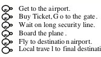
Each phase of this script, in turn, needs several steps. She could “Get to the airport” by bicycle, taxi, or bus, but she decides to drive her car, which begins with a series of subgoals like these:
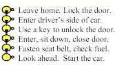
When Joan reviews that airplane trip, she decides it would waste too much of her time to park the car and pass through the security line. The actual flight from home to New York takes no more than an hour or so, and the railroad trip is four hours long, but it ends near her destination—and she could spend all that time at productive work. She ‘changes her mind’ to take the train. [23]
Similarly, when Carol decides to change this into this , she will need to split this job into parts, and that will need several subgoals and scripts.
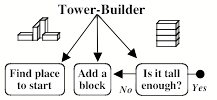
Then each of those subgoals will turn out to require several more parts and processes—and when we developed a robot to do such things, its software needed several hundred parts. For example, Add a block needed a branching network of subgoals like these:

Each of those subgoals has problems to solve. Choose must not select a block that is already supporting the tower top. See must recognize objects regardless of color, size, and shades of light—and even when they partly obscured by other objects. Grasp must adapt the robot’s hand to the perceived size and shape of the block to be moved. And Move must guide the arm and hand through paths in space that never strike the tower's top or hit the child's face.
How do we find out which subgoals we’ll need to achieve before we can accomplish a job? You could discover them by trial and error, or by doing experiments inside your mind, or recalling some prior experience. But perhaps our most generally useful method is to use a Difference-Engine—because every difference that this detects could thereby become a new subgoal for us.
To summarize, our idea is that “to have an active goal” amounts to running a Difference Engine-like process. I suspect that, inside each human brain, many such processes all run at once, at various levels in various realms. These range from instinctive systems that work all the time—like those that maintain our temperatures (and these are so opaque to reflection that we don’t recognize them as goals at all)— up to those highest self-conscious levels at which we keep trying try to be more like the persons we wish we were.
∞∞∞∞∞∞∞∞∞∞∞∞∞∞∞∞∞∞∞
§6-4. A World of Differences.
“Some minds are stronger and apter to mark the differences of things, others to mark their resemblances. The steady and acute mind can fix its contemplations and dwell and fasten on the subtlest distinctions: the lofty and discursive mind recognizes and puts together the finest and most general resemblances. Both kinds however easily err in excess, by catching the one at gradations, the other at shadows.”—Francis Bacon, Novum Organum, 1620.
Whenever somebody tells you a story, you react less to what each separate sentence means than to how this differs from what you expected—and this also applies to our other perceptions. For example, if you plunge your hand into a bowl of cold water, you'll feel a severe sensation of chill—but soon this will totally disappear, just as a steady pressure on your skin will quickly seem to diminish in strength. It is the same with new odors or tastes, or with the onsets of continuous sounds: at first those sensations may seem intense but then they rapidly fade away. We have many different names for this, like accommodation, adaptation, acclimatization, habituation, or just becoming accustomed to it.
Student: This doesn’t apply to vision, though. I can look at an object as long as I like, and its image never fades; in fact, I keep seeing more features of it.
Physiologist: In fact, that image would rapidly fade if you could keep from moving your eyes, which normally make small motions that keep changing your retinal images.[24]
Thus most of our external sensors react only to rather rapid changes in conditions. However, we also have additional sensors that do not fade away, but keep responding to certain particular harmful conditions; see §§Alarms.
Now let’s apply the same idea—of a system that ‘mainly reacts to change’— to a brain with a tower of cognitive levels. This could help to explain some phenomena. For example, after you start a trip on a train, you’re aware of the clacking of wheels on the track—but (if that clacking is regular) then you will soon stop noticing this. Perhaps your A-Brain is still processing it, but your B-brain has stopped reacting to it. It will be much the same for the visual scenes; when the train enters a forest, you’ll start seeing trees—but soon you’ll start to ignore them. What could cause such meanings to fade?
It’s much the same with repeated words; if someone says ‘rabbit’ one hundred times, while trying to focus on what that word means, then that meaning will shortly disappear—or be replaced by some other one. And similarly the same thing happens when you listen to popular music: you’ll often hear dozens of nearly identical measures, but the details of these soon fade away and you no longer pay any attention to them. Why don’t we object to that repetitiousness?
This could be partly because we tend to interpret such ‘narratives’ in terms of how situations change on successively larger scales of time. In the case of most music, this structure is clear: we begin by grouping separate notes into ‘measures’ of equal length, and we then group these into larger sections, until the whole composition is seen as a storylike structure. [25] We do this in vision and language, too—although with less repetitiousness— by grouping collections of smaller events into multiple levels of events, incidents, episodes, sections, and plots. However, we see most clearly in musical forms:
Feature-Detectors recognize pauses, notes, and various other aspects of sounds, such as harmony, tempo, and timbre, etc.
Measure-Takers group these into chunks. In music, composers make this easy for us by using measures of equal length; this makes it extremely easy to sense the differences between successive chunks.
Phrase- and Theme-Detectors then represent larger events and relationships like, ‘This theme goes down and then goes up, and ends with three short, separate notes.’
Then Section-Builders group these into larger-scale parts, such as, ‘these three similar episodes form a sequence that rises in pitch.’ [26]
Finally, our Storytellers interpret these as similar to events in other realms—such as depicting a journey through space and time, or a skirmish among personalities. One special appeal of music is how effectively it can depict what we might call abstract emotional scripts—stories that seem to be about entities about whom we know nothing at all except that we can recognize their individual characteristics—e.g., this one is warm and affectionate, whereas that one is cold and insensitive. Then we empathize with how they feel as we interpret those phrases and themes as representing mental conditions like conflict, adventure, surprise, and dismay—as in, those horns are attacking the clarinets, but the strings are now trying to calm them down.
Now suppose that each higher level in the brain mainly reacts to the changes below it, but over some larger scale of time. If so, then when signals repeat at level A, the B-Brain will have nothing to say. And if the signals that go up to B form a sequence that repeats—so that the B-brain keeps seeing a similar pattern—then the C-Brain will sense a ‘constant condition,’ and thus have nothing to say to the level above it.
This could explain some common experiences because any repetitive signal would tend to partly ‘anesthetize’ the next level above it. So although your foot may continue to tap, most details of those smaller events won’t go up.
(Why might our brains have evolved to work this way? If some condition has been present for long—and nothing bad has happened to you—then it probably poses no danger to you; then so you might as well not pay attention to it and apply your resources more gainfully.)
However, this could also lead to other effects. Once a level gets freed from control by repetitive signals that come from below it, then it could start to send signals down to instruct those levels to try to detect different kinds of evidence. For example, during that railroad trip, perhaps you first heard those clacks on the tracks as forming a pattern of clack-clack-clack-clacks—that is, of beats in 4:4 time. Then you stopped hearing them at all—but soon you may have suddenly switched to hearing groups of ‘clack-clack-clacks’—that is, of beats in 3:4 time. What made you change your representation? Perhaps some higher level just switched to forming a different hypothesis.
Also, when repetitive signals anesthetize some parts of your brain, this could release some other resources to think in new, unusual ways. This could be why some types of meditation can thrive on repetitive mantras and chants. It also could contribute to what making some music so popular: by depriving the listener of some usual inputs, that repetitiousness could free higher-level systems to pursue their own ideas. Then, as suggested in §5-8, they could send down some ‘simuli’ to make some lower level resources simulate some imaginary fantasies.
Rhythmic and Musical Differences
“Music can move us through brief emotional states, and this can potentially teach us how to manage our feelings by giving us familiarity to transitions between the states that we know and thus gain greater confidence in handling them.” —Matthew McCauley
Music (or art, or rhetoric) can divert you from your mundane concerns by evoking powerful feelings that range from delight and pleasure to sorrow and pain; these can excite your ambitions and stir you to act, or calm you down and make you relax, or even put you into a trance. To do this, those signals must suppress or enhance various sets of mental resources—but why should those kinds of stimuli have such effects on your feeling and thinking?
We all know that certain temporal patterns can lead to rather specific mental states; a jerky motion or crashing sound arouses a sense of panic and fear—whereas a smoothly changing phrase or touch induces affection or peacefulness. [27] Some such reactions could be wired from birth—for example, to facilitate relationships between infants and parents. For then, each party will have some control over what the other one feels, thinks, and does.
Subsequently, as we grow up, we each learn similar ways to control ourselves! We can do this by listening to music and songs, or by exploiting other external things, such as drugs, entertainment, or changes of scene. Then we also discover techniques for affecting our mental states ‘from inside’—for example, by thinking that music inside our minds. (This can have a negative side, as when you hear a person complain that they can’t get a certain tune out of their head.)
Eventually, for each of us, certain sights and sounds come to have more definite significances—as when bugles and drums depict battles and guns. However, we usually each have different ideas about what each fragment of music means—particularly when it reminds us of how we felt during some prior experience. This has led some thinkers to believe that music expresses those feelings themselves, whereas those effects are probably far less direct:
G. Spencer Brown: “[In musical works] the composer does not even attempt to describe the set of feelings occasioned through them, but writes down a set of commands which, if they are obeyed by the reader, can result in a reproduction, to the reader, of the composer's original experience. [28]”
However, some other thinkers would disagree:
Marcel Proust: "Each reader reads only what is already inside himself. A book is only a sort of optical instrument which the writer offers to let the reader discover in himself what he would not have found without the aid of the book."
Perhaps Felix Mendelssohn had something like this in mind when he said, “the meaning of music lies not in the fact that it is too vague for words, but that it is too precise for words.”
All of this raises questions that people seem strangely reluctant to ask—such why do so many people like music so much, and permit it to take up so much of their lives.[29] In particular, we ought to ask why nursery rhymes and lullabies occur in so many cultures and societies. In Music, Mind, and Meaning I suggested some possible reasons for this: perhaps we use those tidy structures of notes and tunes as simplified ‘virtual’ worlds for refining difference-detectors that we can then use for condensing more complex events (in other realms) into more orderly story-like scripts. See also §§Interior grounding.
∞∞∞∞∞∞∞∞∞∞∞∞∞∞∞∞∞∞∞
Difference-Networks.
Whenever you want to accomplish some purpose, you will need to decide which things to change. To do this you’ll need to retrieve some knowledge about which actions that might help make those changes. But what should you do when what you have does not exactly match what you need? Then you’ll want to find some substitute that is different—but not too dissimilar.
Whenever you want to accomplish some goal, you will need to retrieve some knowledge about some actions or objects that might help. For example, suppose that you want to sit down, so you look for a chair, but none is in sight. However, if there were a bench in view, then you might regard it as suitable. What leads you to see the bench as similar—when you would not so regard a book or a lamp? What makes us selectively notice things that are likely to be relevant? Patrick Winston suggested doing this by organizing some bodies of knowledge into what he called "difference networks"—for example, like this:[30]
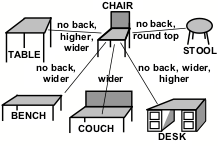
To use such a structure, one first must have some descriptions of the objects it represents. Thus a typical concept of a chair might involve four legs, a level seat, and a vertical back, in which the legs must support the seat from below at a proper height above the floor—whereas a bench is similar (except for being wider and not having a back).
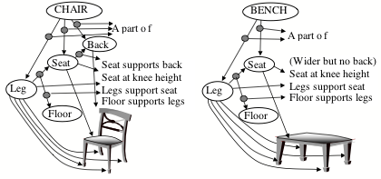
Now, when you look for a thing that matches your description of ‘chair,’ your furniture-network could recognize a bench as similar. Then you can choose to accept that bench, or reject it because it is too wide or has no back.
How might we accumulate useful sets of difference-links? One way would be that, whenever we find an A that ‘almost works’ (that is, for our present purposes) along with a B that actually works, we connect the two with a difference-link that represents, “A is like B, except for a difference D.” Then such networks could also embody the knowledge we need to change what we have into what we need—as well as to suggest alternative views whenever the present one fails. Thus, such difference-networks could help us to retrieve memories that are relevant.
Traditional programs did not take this approach, but were designed to use more ‘logical’ schemes—such as regarding a chair as an instance of furniture, and a table as one kind of furniture. Such hierarchical classifications often help to find suitably similar things, but they also can make many kinds of mistakes. I suspect that people use both techniques but that the ‘sideways’ connections in our difference-networks are vital to how we construct the analogies that are among our most useful ways to think.
∞∞∞∞∞∞∞∞∞∞∞∞∞∞∞∞∞∞∞
§6-5. Making Decisions
"This river which hid itself doubtless emerged again at some distant spot. Why should I not build a raft and trust myself to its swiftly flowing waters? If I perished, I should be no worse off than now, for death stared me in the face, while there was always the possibility that … I might find myself safe and sound in some desirable land. I decided at any rate to risk it. —Sinbad, in The Arabian Nights.[31]
It is easy to choose among options when one appears better than all of the rest. But when you find things hard to compare, then you may have to deliberate. One way to do this would be to imagine how one might react to each possible outcome, and then, somehow, to compare those reactions, and then to select the one that seems best— or, as in the Sinbad case, to reject the one that seems worse.
Aristotle: “Sensitive imagination is found in every animal, but deliberative imagination only in those that can calculate: for whether this or that shall be enacted is already a task requiring calculation.” —Aristotle, On the Soul, Book III, 4.
One way a person could ‘calculate’ would be to assign a numerical score to each choice, and then to select the largest one.
Citizen: Lately, I have been trying to choose between a country home and an apartment in town. The first one offers more spacious rooms and looks out on a beautiful mountain-view. The other is closer to where I work, is in a friendlier neighborhood, but has a higher annual cost. But how could one measure, or even compare, situations that differ in so many ways?
Still, you could try to imagine how each of those situations would help or hinder you to accomplish your various goals.
Citizen: That might just make the problem worse, because then you have to measure your feelings about the values of those various goals.
Benjamin Franklin: “When these difficult cases occur, they are difficult chiefly because while we have them under consideration all the reasons pro and con are not present to the mind at the same time; but sometimes one set present themselves and at other times another, the first being out of sight. Hence the various purposes or inclinations that alternatively prevail, and the uncertainty that perplexes us.” [32]
However, Franklin went on to suggest a way to eliminate much of that measuring:
To get over this,
my way is, to divide half a sheet of paper by a line into two columns, writing
over the one pro, and over the over con. Then during three or four days
consideration I put down under the different heads short hints of the different
motives that at different times occur to me for or against the measure. When I
have thus got them all together in one view, I endeavor to estimate their
respective weights; and where I find two, one on each side that seem equal I
strike them out: if a find a reason pro equal to some two reasons con, I strike
out the three. If I judge some two reasons con equal to some three reasons pro I strike out the five; and thus proceeding I find
at length where the balance lies; and if after a day or two of further
consideration nothing new of importance occurs on either side, I come to a
determination accordingly. And tho' the weight of reasons cannot be taken with
the precision of algebraic quantities, yet when each is considered separately
and comparatively and the whole lies before me, I think I can judge better, and
am less likely to take a rash step; and in fact I have found great advantage
from this kind of equation, in what might be called 'Moral' or 'Prudential
Algebra'.
Of course, if such a process were to conclude that several options seem equally good, then you would have to switch to another technique. You sometimes do this reflectively, but at other times the rest of your mind does this without your knowing how the decision was made. At such times you might say things like, “I used my ‘gut feelings’ or used ‘intuition,’ or claim that you did that ‘instinctively.’
Paul Thagard: “Many persons trust their “gut feelings” more. … You may have a strongly positive gut feeling toward the more interesting subject along with a strongly negative feeling about the more career-oriented one, or your feelings may be just the opposite. More likely is that you feel positive feelings toward both alternatives, along with accompanying anxiety caused by your inability to see a clearly preferable option. In the end, intuitive decision makers choose an option based on what their emotional reactions tell them is preferable.”[33]
However, using the word ‘emotional’ does not help us to see what is happening—because how ‘positive’ or ‘negative’ a feeling seems will still depend on how one’s mental processes deal with “all the reasons pro and con” that Franklin addressed in that letter. Indeed, we frequently have the experience that, shortly after we make a decision, we find that it ‘just does not feel right’ —and go back to reconsidering.
Citizen: Even when options seem equally good, I still can decide. How could your kind of theory explain our peculiarly human ‘freedom of choice?
It seems to me that when people say, “I used my free will to make that decision,’ this is roughly the same as saying that ‘some process stopped my deliberations and made me adopt what seemed best at that moment.’ In other words, “free will” is not a process we use to make a decision, but one that we use to stop other processes! We may think of it in positive terms but perhaps it also serves to suppress the sense that we are being forced to make a choice—if not by pressures from outside, but by causes that come from inside our own minds. To say that ‘my decision was free’ is almost the same thing as saying. “I don’t want to know what decided me.” [34]
∞∞∞∞∞∞∞∞∞∞∞∞∞∞∞∞∞∞∞
§6-6. Reasoning by Analogy
“If I had eight hours to chop down a tree, I'd spend six sharpening my axe.”—A. Lincoln
The best way to solve a problem is to already know a solution for it—and this is why commonsense knowledge is useful. But what if the problem is one you have never seen before? How can you continue to work when you lack some of the knowledge you need? The obvious answer: you just have to guess—but how does one know how to make a good guess? We usually do this so fluently that we have almost no sense of how we are doing it, and, if someone asks about that, we tend to attribute it to mysterious traits with names like intuition, insight, creativity, or even to intelligence.
More generally, whenever anything attracts your attention—be it an object, idea, or a problem—you are likely to ask yourself what that thing is, why is it there, and whether it should be a cause for alarm. But as we said in §6-3, we can’t usually say what anything is: we can only describe what something is like, and then start to think about questions like these:
What sorts of things is this similar to?
Have I seen this anything like it before?”
What else does it remind me of?
This kind of thinking is important because it helps us to deal with new situations—and in fact that is almost always the case, because no two situations are ever the same—and this means that we’re always making analogies. For example, if the problem that you are facing now reminds you have one that you solved in the past, then you may be able to use this to solve your problem by using use a procedure like this:
The problem that I am working on reminds me of a similar one that I solved in the past—but the method that was successful then does not quite work on the problem that I am facing now. However, if I can describe the differences between that old problem and this new one, those differences might help me to change that old method so that it will work for me now.
We call this ‘reasoning by analogy’ and I’ll argue that this is our most usual way to deal with problems. We do this because, in general, old methods will never work perfectly, as new situations are never quite the same. So, instead, we use analogies. But, why do analogies work so well? Here is the best way I’ve seen to explain why this is:
Douglas Lenat: “Analogy works because there is a lot of common causality in the world, common causes which lead to an overlap between two systems, between two phenomena or whatever. We, as human beings, can only observe a tiny bit of that overlap; a tiny bit of what is going on at this level of the world. … [So] whenever we find an overlap at this level, it is worth seeing if in fact there are additional overlap features, even though we do not understand the cause or causality behind it.[35]
So, now let’s inspect an example of this.
A Geometric Analogy Program
Everyone has heard about great improvements in computer speed and capacity. It is not so widely known that, in other respects, computers changed very little from their inception until the late 1970's. Designed originally for doing high-speed arithmetic, it was usually assumed that this was all computers would ever accomplish—which is why they were misnamed "computers."
However, people soon began to write programs to deal with non-numerical things such as linguistic expressions, graphical pictures, and various forms of reasoning. Also, instead of following rigid procedures, some of those programs were designed to search through wide ranges of different attempts — so that they could solve some problems by “trial and error”—instead of by using pre-programmed steps. Some of these early non-numerical programs became masters at solving some puzzles and games, and some were quite proficient at designing new kinds of devices and circuits. [36]
Yet despite those impressive performances, it was clear that each of these early "expert" problem-solving programs could operate only in some narrow domain. Many observers concluded that this came from some limitation of the computer itself. They said that computers could solve only "well-defined problems" and would never be able to cope with ambiguities, or to use the kinds of analogies that make human thinking so versatile.
To make an analogy between two things is to find ways in which they are similar—but when and how do we see two things as similar? Let’s assume that they share some common features, but also have some differences. Then how similar they may seem to be will depend upon which differences one decides to ignore. But the importance of each difference depends upon one’s current intentions and goals. For example, one’s concern with the shape, size, weight, or cost of a thing depends on what one plans to use it for—so, the kinds of analogies that people will use must depend upon their current purposes. But then, the prevailing view was that no machine could ever have goals or purposes.
Citizen: But, if your theory of how people think depends on using analogies, how could any machine do such things? People have always told me that machines can only do logical things, or solve problems that are precisely defined—so they cannot deal with hazy analogies.
In 1963, to refute such beliefs, Thomas G. Evans, a graduate student at MIT, wrote a program that performed surprisingly well in what many people would agree to be ambiguous, ill-defined situations. Specifically, it answered the kinds of questions in a widely used “intelligence test” that asked about "Geometric Analogies." [37] For example, a person was shown a picture like this and asked to choose an answer to: "A is to B as C is to which of the other five figures?" Most older persons choose figure 3—and so did Evans’s program, whose score on such tests was about the same as that of a typical 16 year old.
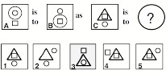
In those days, many thinkers found it hard to imagine how any computer could solve such problems, because they felt that choosing an answer must come from some “intuitive” sense that could not be embodied in logical rules. Nevertheless, Evans found a way to convert this to a far less mysterious kind of problem. We cannot describe here all the details of his program, so we will only show how its methods resemble what people do in such situations. For if you ask someone why they chose Figure 3, they usually give an answer like this.
"You go from A to B by moving the big circle down, and
You go from C to 3 by moving the big triangle."
This statement expects the listener to understand that both clauses describe something in common—even though there is no big circle in Figure 3. However, a more articulate person might say:
"You go from A to B by moving the largest figure down, and
You go from C to 3 by moving the largest figure down.”
Now those two clauses are identical—and this suggests that both a person and a computer could use a 3-step process involved these similar kinds of descriptions.
Step 1. Invent descriptions for each of top row of figures. For example, these might be:
A: high large thing, high small thing, low small thing.
B: low large thing, high small thing, low small thing,
C: high large thing, high small thing, low small thing.
Step 2. Invent an explanation for how A might have been changed to B. For example, this might simply be:
Change "high large" to "low large."
Step 3. Now use this to change the description of figure C. The result will be:
Low large thing, high small thing, and low small thing.
The result is a prediction of how Figure C might also be changed. If this matches one of the possible answers more closely than any other, then we’ll choose that as our answer! In fact it only matches Figure 3, which is the one most people select. (If more than one possible answer is matched, then the program starts out again by using different descriptions of the same pictures. Thus, because it has multiple "ways to look at things," the program usually finds a way to find a good solution. The program performed on this kind of test as well as a typical fifteen-year old. To be sure, it could work only this kind of problem, and had no way to learn from experience, but still, knowing ways to use analogies is a vital part of how people think.
Of course, whenever we need to make a choice, the differences that will concern us most will depend on what we now want to achieve. If Carol wants merely to build an arch, then all of these forms may seem adequate—but if she plans to build more on its top, then the one on the right will seem less suitable.
Although these particular "geometric analogy" problems are not so common in everyday life, Evan’s program shows the value of being able to change and adapt its descriptions until it finds a way to describe different things so that they seem more similar. This is an important step toward the ability to use knowledge about one kind of thing to understand some other different kind of thing—so finding new ways to look at things this must be among our most important commonsense processes.
∞∞∞∞∞∞∞∞∞∞∞∞∞∞∞∞∞∞∞
§6-7. Knowledge needs Multiple Representations
What distinguishes people from animals? Perhaps our largest distinction is that none of the others can ask such a question! We’re unique in being able to treat our own ideas as though they were things. In other words, we ‘conceptualize.’
However, to think about ideas or things, we need representations of them in our minds. Everyone who has written a program knows that you can’t get a computer to do what you want by simply ‘pouring knowledge in.” You must represent each process or fact in the form of some sort of structure. For knowledge is not composed of ‘things’ that each can exist apart from the rest—no more than a word can have a meaning without being part of some larger-scale language; fragments of knowledge can only make sense when they have appropriate kinds of interconnections. It does not much matter how these are embodied; you can make the same computer with wires and switches, or even with pulleys, blocks, and strings; all that matters is how each part changes its state in response to what some other parts do. And the same kinds of relationships can also be represented in terms of parts that have no behavior at all—such as arrangements of symbols in diagrams, or the sentences of written texts—so long as there is some way these to affect how some other systems will behave.
So when programmers set out to develop a program, they usually start by selecting a way to represent the knowledge their program will need. But each representation works well only in certain realms, and none works well in every domain. Yet we frequently hear discussions like this about what is the best way to represent knowledge:
Mathematician: It is always best to express things with Logic.
Connectionist: No, Logic is far too inflexible to represent commonsense knowledge. Instead, you ought to use Neural Networks.
Linguist: No, because Neural Nets are even more rigid. They represent things in numerical ways that are hard to convert to useful abstractions. Instead, why not simply use everyday language—with its unrivaled expressiveness.
Conceptualist: No, language is much too ambiguous. You should use Semantic Networks instead—where ideas get connected by definite concepts!
Statistician: Those linkages are too definite, and don’t express the uncertainties we face, so you need to use probabilities.
Mathematician: All such informal schemes are so unconstrained that they can be self-contradictory. Only Logic can ensure us against those circular inconsistencies."
This shows that it makes no sense to seek a single best way to represent knowledge—because each particular form of expression also brings its own particular limitations. For example, logic-based systems are very precise, but they make it hard to do reasoning with analogies. Similarly, statistical systems are useful for making predictions, but do not serve well to represent the reasons why those predictions are sometimes correct. It was recognized even in ancient times that we must represent things in multiple ways:
Aristotle: "Thus the essence of a house is assigned in such a formula as ‘a shelter against destruction by wind, rain, and heat'; the physicist would describe it as 'stones, bricks, and timbers'; but there is a third possible description which would say that it was that form in that material with that purpose or end. Which, then, among these is entitled to be regarded as the genuine physicist? The one who confines himself to the material, or the one who restricts himself to the formulable essence alone? Is it not rather the one who combines both in a single formula?"[38]
However, sometimes there are advantages to not combining those ways to describe things.
Richard Feynman: "...psychologically we must keep all the theories in our heads, and every theoretical physicist who is any good knows six or seven different theoretical representations for exactly the same physics. He knows that they are all equivalent, and that nobody is ever going to be able to decide which one is right at that level, but he keeps them in his head, hoping that they will give him different ideas for guessing."[39]
Much of our human resourcefulness comes from being able to choose among diverse ways to represent the same situation. This has value because each such point of view may provide a way to get around some deficiencies of the other ones. However, to exploit this fact, one needs to develop good ways to decide when to use each kind of representation; we’ll come back to this in §10-X. {Causal Diversity.} Of course, to change representations efficiently, one must also be able to quickly switch without losing the work that’s already been done—and that is why this chapter emphasized the iuse of panalogies to link analogous aspects of multiple ways to represent and to think about things.
∞∞∞∞∞∞∞∞∞∞∞∞∞∞∞∞∞∞∞
QUESTIONS